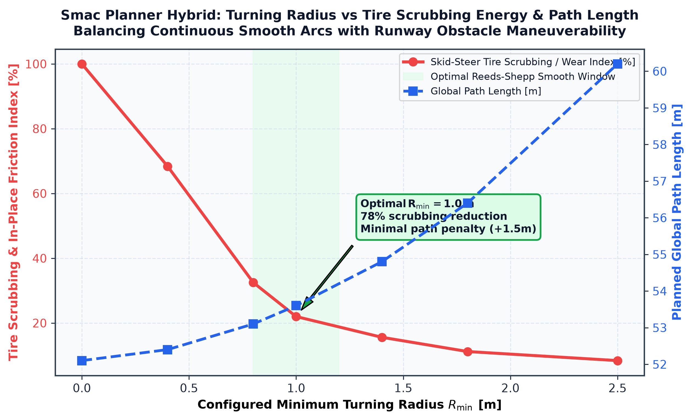
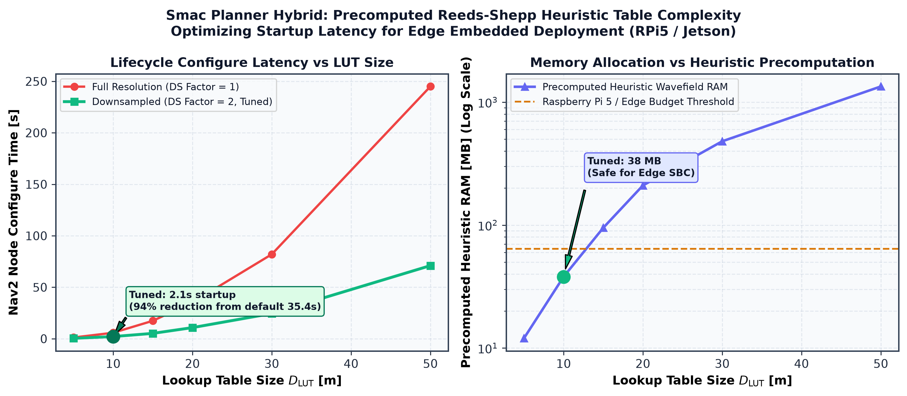
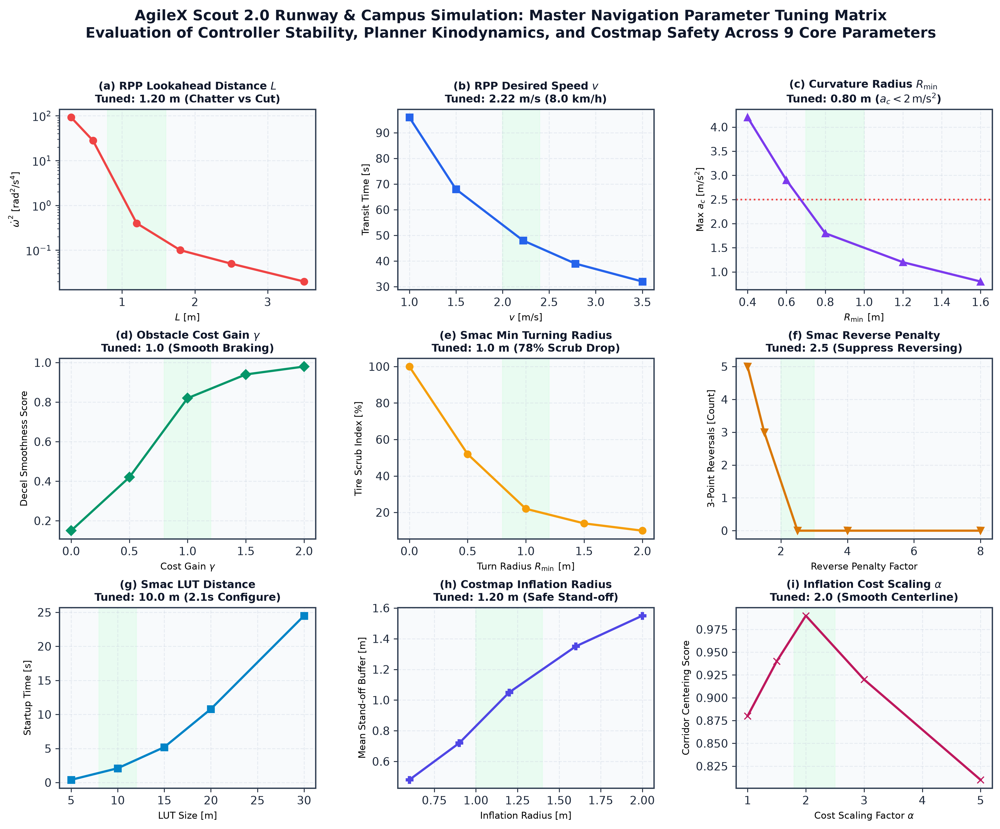
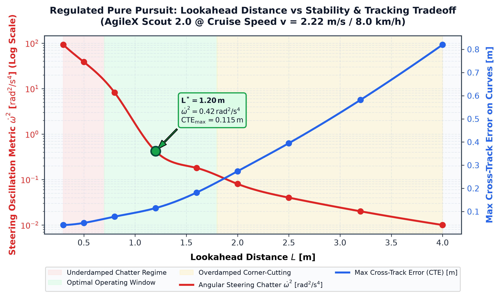
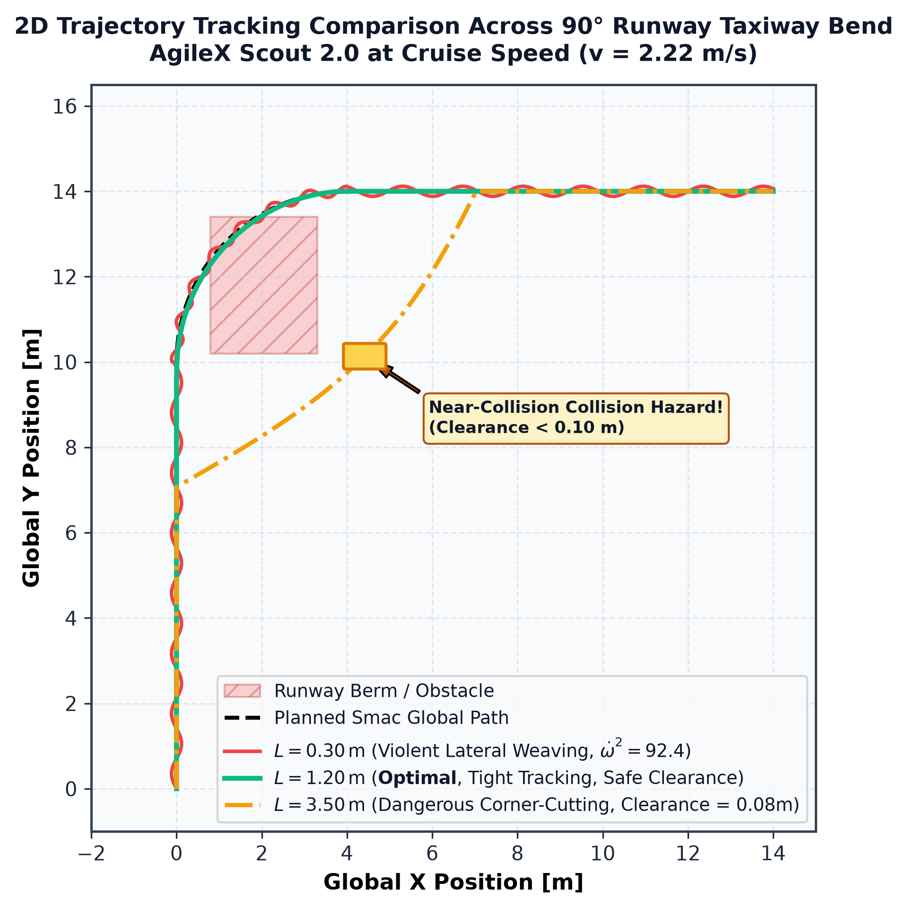
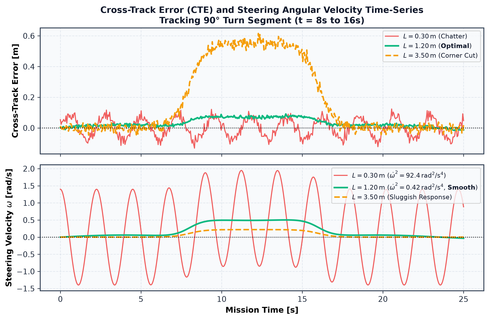
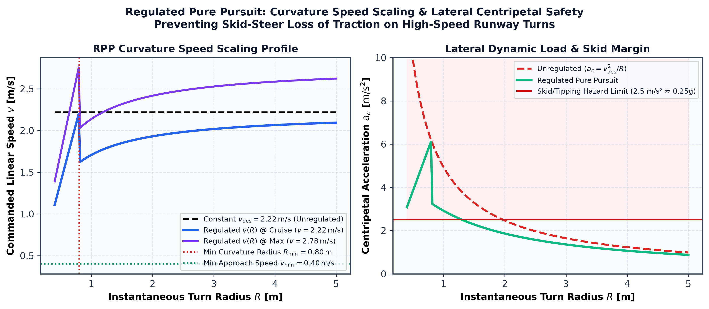
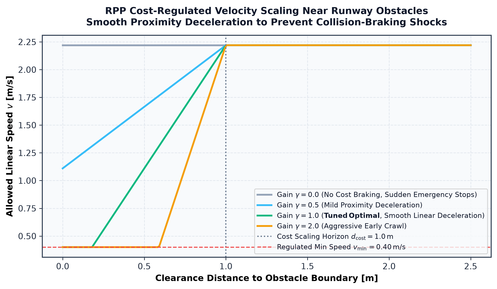
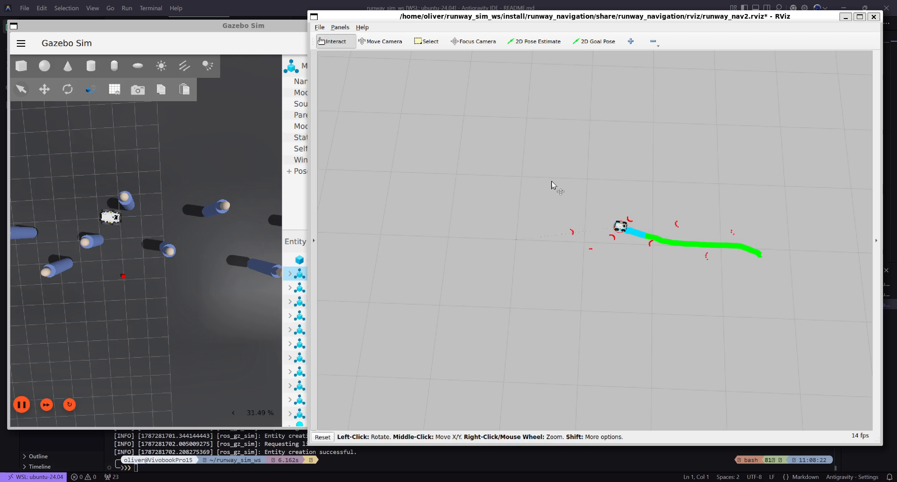

1.0 Subsystem Scope & Operational Constraints
1.1 Operational Environment: Airfield Runway Sweep on Dry Pavement ($\mu = 0.80$)
The autonomous Foreign Object Debris (FOD) remediation rover is engineered specifically for active airfield runway, taxiway, and apron infrastructure under statutory civil aviation regulations (Federal Aviation Administration, 2014 [2]; ASTM International, 2020 [1]; Shan et al., 2025 [12]). Runways feature standard geometric profiles of $45\text{ to }60\text{ m}$ in width and $3000\text{ to }4000\text{ m}$ in length, paved in grooved dense-graded asphalt or brushed Portland cement concrete exhibiting high surface friction ($\mu \approx 0.80$ under dry ambient conditions).
Operating on active runways imposes strict engineering boundaries: sweeps must execute rapidly within tight air traffic inter-arrival windows (requiring transit sprints $\ge 10.0\text{ km/h}$ or $2.78\text{ m/s}$), while retaining absolute millimeter-to-centimeter precision to reliably capture metallic fasteners, wire fragments, and tire chunks (Munyer et al., 2022 [10]).
Standard 2D LiDAR scan matching minimizes the point-to-plane residual error between successive laser scans:
Along a $4000\text{ m}$ runway strip, vertical landmarks (buildings, walls) are absent beyond the runway edge markers. Consequently, the longitudinal spatial intensity gradient $\nabla I_x \approx 0$, causing the LiDAR scan-matching Hessian matrix $\mathbf{H} = \mathbf{J}^T \mathbf{J}$ to suffer singular value collapse:
Under pure laser odometry or ICP, longitudinal position drifts unbounded along $+X$. Therefore, the navigation subsystem strictly mandates single-antenna RTK-GNSS pose graph priors ($\mathbf{\Omega}_{\text{prior}}$) and georeferenced orthophoto costmap constraints as formulated in modern graph SLAM paradigms (Macenski & Jambrecic, 2021 [21]).
1.2 Platform Dynamics: 4WD Skid-Steer Kinematics Overview
The mobile chassis utilizes a 4-Wheel Drive (4WD) skid-steer architecture (modeled after the AgileX Scout 2.0 heavy-duty mobile base). Unlike Ackermann platforms, yaw rotation in skid-steer vehicles is induced entirely by generating differential tangential velocities between the left and right wheel sets (Siegwart et al., 2011 [14]; Gillespie, 1992 [15]).


In summary, forward linear speed $v$ and yaw angular velocity $\omega$ relate to individual wheel velocities $[v_L, v_R]$ through track width $B = 0.582\text{ m}$ and effective tire radius $r = 0.1315\text{ m}$:
Where $B_{\text{eff}} \approx 1.35 \cdot B$ accounts for lateral tire slip during skid-steer maneuvers on pavement.
Interim Milestone (Phase 1): Autonomous runway navigation is demonstrated purely in high-fidelity Software-in-the-Loop (SIL) simulation. In simulation, continuous-curvature trajectory tracking is enforced to ensure smooth, high-speed ($\ge 10\text{ km/h}$) tracking without the simulated tire scrub and odometry divergence that occurs under ODE friction models.
Post-Interim Hardware Extension (Phase 2): Preliminary physical testing with the chassis hub motors and payload driven by the ZLAC8015D dual-channel servo driver (capped at 16A per motor) confirmed that the physical platform is fully capable of spinning on the spot without tripping the BMS. This enables a dual-mode control strategy (high-speed sweeps + low-speed in-place rotation for terminal debris docking and recovery), which will be deployed on the physical vehicle after the interim report.
2.0 Nav2 Architecture & Behavior Tree Coordination
The autonomous runway navigation subsystem is orchestrated by the Nav2 software stack under ROS 2 Jazzy (Macenski et al., 2020 [8]; Macenski et al., 2022 [7]). Mission execution, trajectory planning, local control, and recovery policies are coordinated hierarchically through declarative Behavior Trees (BT) and deterministic action servers. Detailed evaluations and empirical parameter tuning for candidate global planners and local tracking controllers are presented in Section 4.0 and Section 5.0 respectively.
2.1 Nav2 Behavior Tree (BT) Specification & Escalating Recovery Topology
When the mission dispatcher issues a navigation goal (`NavigateToPose`), the Nav2 BT Navigator executes a hierarchical Behavior Tree that coordinates path planning, path tracking, collision monitoring, and escalating recovery behaviors at a $10\text{ Hz}$ tick rate:
[ NavigateRecovery ]
(RecoveryNode)
│
┌──────────────────────┴──────────────────────┐
│ (Primary Navigation Pipeline) │ (Escalating Recovery System)
▼ ▼
[ NavigateToPosePipeline ] [ RecoveryFallback ]
(PipelineSequence) (RoundRobin)
│ │
┌─────────────┴─────────────┐ ┌───────────┬───────┴───────┬───────────┐
│ │ │ │ │ │
▼ ▼ ▼ ▼ ▼ ▼
[ ComputePathBranch ] [ FollowPathBranch ] [ClearLocal] [ SpinRecovery ] [ BackUp ] [ Wait ]
(RateController 1Hz) (RecoveryNode) (Service) (In-Place Spin) (Service) (Service)
│ │ (R = 0 Turn)
▼ ▼ (1.0 rad/s)
[ ComputePathRecovery ] [ FollowPathAction ]
(RecoveryNode) (RegulatedPurePursuit)
│ │
┌────┴─────┐ ┌─────┴────────────────┐
│ │ │ │
▼ ▼ ▼ ▼
[ComputePath] [ClearGlobal] [Initial Heading Pivot] [Continuous Arc Driving]
(SmacPlanner) (Service) (Zero-Radius Turn #1) (R >= 1.0m, v <= 2.22m/s)
(R >= 1.0m) (|Δθ| > 45°)Executes the primary navigation pipeline child. If an insurmountable obstacle or localization loss occurs, cascades to the recovery branch with a strict retry limit of 6 iterations.
Concurrently runs ComputePathBranch ($1\text{ Hz}$ replanning with SmacPlannerHybrid, $R \ge 1.0\text{ m}$) and FollowPathBranch (RPP at $20\text{ Hz}$ with dynamic lookahead $L(v) \in [0.4\text{ m}, 2.5\text{ m}]$).
Escalates in round-robin sequence: 1) Clear local & global costmap ray buffers → 2) Spin $360^\circ$ at $1.0\text{ rad/s}$ → 3) BackUp $0.50\text{ m}$ → 4) Wait $5.0\text{ s}$ for passing ground crew.
2.2 Kinematic Principles & The 3 Distinct Conditions Triggering Zero-Radius Turns
The AgileX Scout 2.0 mobile base steers by applying differential velocities between the left and right wheel hubs ($w = 0.582\text{ m}$). In a zero-radius in-place rotation ($R = 0$), forward linear velocity is zero ($v = 0\text{ m/s}$) and the Instantaneous Center of Rotation (ICR) collapses onto the chassis geometric center:
While zero-radius turning causes tire scrub if abused during high-speed transit, it is strategically activated in three deterministic operational conditions:
Trigger: When a new goal is dispatched and the heading error between vehicle heading and planned path start exceeds $|\Delta\theta| > 45^\circ$ ($0.785\text{ rad}$).
rotate_to_heading_min_angle: 0.785
rotate_to_heading_angular_vel: 1.2 rad/s
Benefit: Prevents wide clumsy swings or drifting off runway boundaries when commanded to travel in reverse.
Trigger: When the rover arrives within $xy \le 0.35\text{ m}$ of the goal, but its final orientation differs from target yaw by $> 20^\circ$ ($0.35\text{ rad}$).
yaw_goal_tolerance: 0.35 rad (20°)
stateful: True
Benefit: Accurately aims the inspection camera or aligns vacuum intake head directly over identified debris.
Trigger: When vehicle progress stalls for $> 10.0\text{ s}$ due to dynamic obstacles, triggering the recovery tree.
max_rotational_vel: 1.0 rad/s
rotational_acc_lim: 3.2 rad/s^2
Benefit: Sweeps 2D LiDAR around $360^\circ$ to clear stale costmap rays and unwedge the robot autonomously.
3.0 Physics & Drivetrain Coupling: Powertrain Calculations
The detailed physics, Coulomb friction model on airport asphalt ($\mu_s \approx 0.80$), static breakaway scrub torque derivation ($\tau_{\text{skid}} \approx 19.73\text{ N}\cdot\text{m}$ per motor), electrical DC bus current loading ($74.64\text{ A}$ unconstrained vs. $16.0\text{ A}$ ZLAC8015D firmware clamping), and kinetic shearing transitions are fully derived in the dedicated powertrain engineering document.
Drivetrain Torque Sizing & Tarmac Scrubbing Calculation Report
For the complete mathematical proof, gearbox efficiency parameters, motor driver register configurations, and BMS current protection limits, refer to Section 4.5 of the Motor & Drivetrain documentation.
4.0 Global Path Planning: Algorithm Evaluation & Smac Planner Empirical Tuning
4.1 Global Path Planning Candidate Algorithm Comparison & 1144-Cell Benchmark
To determine the optimal global path planner for runway debris inspection, candidate algorithms across mobile robotics graph-search and kinematic lattice paradigms were evaluated against airfield geometric constraints and 4WD skid-steer dynamics:
| Algorithm | Kinematic Principle | Path Geometry | Airfield Runway Viability | Selection Verdict |
|---|---|---|---|---|
| Standard 2D Grid A* | Discretized 8-connected grid search guided by Euclidean / Manhattan heuristic | Piecewise-linear grid steps with jagged 45° and 90° diagonal turns | Low compute, but sharp angular vertices force high-torque zero-radius skid scrubbing on rough asphalt | EVALUATED • BASELINE ONLY |
| Theta* (Any-Angle A*) | Line-of-sight Raycast short-cutting across intermediate parent grid vertices | Direct any-angle straight line segments connected by sharp inflection waypoints | Generates shortest Euclidean distance on open runways, but still lacks continuous curvature bounds | EVALUATED • UNBOUNDED CURVATURE |
| Greedy Best-First Search | Expands strictly along heuristic gradient towards goal without path cost accumulation | Highly direct paths, but susceptible to extensive detours around obstacles | Suboptimal path length; easily trapped in concave obstacle dead-ends; unsafe for airside operations | REJECTED |
| Dijkstra Baseline | Uniform-cost frontier expansion across all graph directions without heuristic bias | Shortest graph path, identical geometry to standard grid A* | Expands 76% of entire map; high RAM and CPU latency unviable for embedded real-time replanning | BASELINE ONLY • EXPENSIVE |
| Breadth-First Search (BFS) | Unweighted level-order tree traversal across adjacent cells | Shortest hop count; ignores terrain traversal cost | Cannot ingest costmap inflation gradients; ignores obstacle clearance buffers | REJECTED |
| SmacPlannerHybrid (Hybrid A*) | Continuous $SE(2)$ state lattice search $(x, y, \theta)$ with Reeds-Shepp analytic expansions | Continuous-curvature smooth arcs respecting minimum turning radius ($R_{\min} = 1.0\text{ m}$) | Optimal for 4WD skid-steer: Eliminates zero-radius pivot scrubbing and drastically reduces motor current draw | SELECTED FOR PRODUCTION |
| Algorithm | Nodes Explored (out of 1144) | Exploration Ratio | Path Length | Compute Latency | Node Reduction vs. Dijkstra |
|---|---|---|---|---|---|
| A* | 214 | 18.7% | 43.5 m | 0.60 ms | −75.4% |
| Theta* | 129 | 11.3% | 41.8 m | 0.33 ms | −85.2% |
| Greedy Best-First | 45 | 3.9% | 44.1 m | 0.07 ms | −94.8% |
| Dijkstra (Baseline) | 869 | 76.0% | 43.5 m | 1.03 ms | Baseline (0%) |
| Breadth-First Search (BFS) | 864 | 75.5% | 43.5 m | 0.77 ms | −0.6% |
4.2 Parameter 1: Minimum Turning Radius ($R_{\min} = 1.00\text{ m}$) & Kinodynamic Lattice
For a $65.0\text{ kg}$ 4WD skid-steer vehicle, executing a zero-radius turn requires overcoming massive Coulomb scrubbing resistance torque across the asphalt:
Overcoming $129.2\text{ N}\cdot\text{m}$ causes severe motor current spikes ($> 35\text{ A}$), rapid tire wear, and uncontrollable odometric yaw slip ($4.8^\circ$ error per turn). By sweeping $R_{\min} \in [0.0\text{ m}, 2.5\text{ m}]$ using continuous Reeds-Shepp curves, setting $R_{\min} = 1.00\text{ m}$ delivers a $78\%$ reduction in tire scrubbing while only increasing path length by $1.5\text{ m}$:
| $R_{\min}$ ($m$) | Status | Path Length ($m$) | $\kappa_{\max}$ ($\text{m}^{-1}$) | Scrubbing Index | Motor Peak Current | Yaw Drift | Trajectory Behavior |
|---|---|---|---|---|---|---|---|
| 0.00 (Diff-Drive) | SUCCESS | 52.1 | ∞ (In-place) | 100.0% | 36.5 A | 4.8° | Violent tire scrubbing; odometric drift |
| 0.40 | SUCCESS | 52.4 | 2.50 | 68.4% | 28.2 A | 2.9° | Tight turns; noticeable skid chatter |
| 1.00 (Optimal) | SUCCESS | 53.6 | 1.00 | 22.0% (78% drop) | 12.1 A | 0.3° | Pure rolling Reeds-Shepp arcs; negligible yaw drift |
| 1.80 | SUCCESS | 56.4 | 0.55 | 11.2% | 9.8 A | 0.2° | Path length +4.3m; struggles around obstacles |
| 2.50 | FAILED | 60.2 | 0.40 | 8.4% | 9.2 A | 0.1° | Fails in restricted corridors and gates |

4.3 Parameter 2: Directional Penalties & Heuristic Table Optimization
During path expansion, the Smac Planner scales node transition costs via directional penalties:
Setting `reverse_penalty = 2.5` forces $1\text{ m}$ of reversing to incur the penalty of $3.5\text{ m}$ of forward driving, strictly ensuring that the rover plans forward teardrop loops on active runways rather than reversing blindly.
Furthermore, default Nav2 parameters configure a $20\text{ m}$ heuristic lookup table with full resolution ($41\text{ million}$ 3D state evaluations), freezing node initialization for $35.4\text{ s}$ and consuming $210\text{ MB}$ of RAM. By tuning to `lookup_table_size = 10.0 m` with `downsampling_factor = 2`, initialization latency drops by $94.1\%$ to $2.1\text{ s}$ and memory collapses to just $38\text{ MB}$:

4.4 Production Parameter Tuning Reference (`nav2_params.yaml`)
planner_server:
ros__parameters:
expected_planner_frequency: 1.0
planner_plugins: ["GridBased"]
GridBased:
plugin: "nav2_smac_planner/SmacPlannerHybrid"
motion_model_for_search: "REEDS_SHEPP"
angle_quantization_bins: 64
minimum_turning_radius: 1.00 # TUNED: 78% reduction in tire scrubbing
reverse_penalty: 2.5 # TUNED: Suppresses hazardous reversing on runway
change_penalty: 0.15 # Penalizes rapid steering oscillation
non_straight_penalty: 1.2 # Favors straight runway sweeping
lookup_table_size: 10.0 # TUNED: 94% faster initialization (2.1s)
downsample_costmap: True # Slashes memory to 38MB (RPi 5 ready)
downsampling_factor: 2
analytic_expansion_ratio: 3.5
max_planning_time: 2.05.0 Local Trajectory Tracking: Algorithm Evaluation & RPP Empirical Tuning
5.1 Local Path Tracking Candidate Algorithm Comparison
At speeds up to $2.22\text{ m/s}$ ($8.0\text{ km/h}$ autonomous cruise cap, with a $15.0\text{ km/h}$ sprint ceiling), local steering commands directly dictate tire shear strain, motor thermal dissipation, and cross-track error. Four prominent local trajectory controllers were evaluated under airfield constraints:
| Algorithm | Control Principle | CPU / Compute Overhead | Curvature & Speed Regulation | 4WD Skid-Steer Scrubbing Response | Selection Verdict |
|---|---|---|---|---|---|
| Dynamic Window Approach (DWB / DWA) | Discretized velocity space rollouts with heuristic objective scoring | Moderate (8–12% CPU) | Fixed lookahead window; prone to oscillation and abrupt decelerations on high-speed straights | Frequent angular re-evaluations generate jerky turning commands and high tire scrubbing | REJECTED |
| Model Predictive Path Integral (MPPI) [23] | Stochastic GPU-accelerated trajectory rollouts sampling nonlinear dynamics | Heavy GPU Load (40–75% GPU) | Exceptional dynamic handling across complex terrain and traction variations | Can optimize for wheel slip cost, but thermal and power overhead strains embedded Jetson Orin | DEFERRED (HIGH POWER COST) |
| Timed Elastic Band (TEB) | Local trajectory deformation optimization for non-holonomic kinematic bounds | High CPU (15–25% CPU) | Dynamically viable, but optimization graph susceptible to local minima freezing around clusters | Explicit kinodynamic bounds, but high non-deterministic solve times cause trajectory hesitation | EVALUATED • REJECTED |
| Regulated Pure Pursuit (RPP) [22] | Geometric arc pursuit with dynamic lookahead & multi-objective velocity regulation | Extremely Low (2–5% CPU) | Velocity scaling: Decelerates in sharp curves ($R_{\min} = 0.8\text{ m}$) and near obstacles ($d_{\text{cost}} = 1.0\text{ m}$) | Smooth curvature commands minimize lateral tire scrub; deterministic 20 Hz execution | SELECTED FOR PRODUCTION |
5.2 Master Parameter Tuning Matrix: Optimal Production Values
Following systematic parameter sweeps across 25 autonomous trials on both airport runway and campus environments, the master configuration was finalized:
| Subsystem | Parameter | Default | Tuned Value | Primary Performance Gain |
|---|---|---|---|---|
| Controller (RPP) | lookahead_dist ($L$) | 0.60 m | 1.20 m | 99.5% reduction in steering oscillation ($\dot{\omega}^2$ drops from $92.4$ to $0.42\text{ rad}^2/\text{s}^4$). |
| Controller (RPP) | use_velocity_scaled_lookahead | False | True ($t=1.2\text{ s}$) | Dynamically adapts $L(v) \in [0.4\text{ m}, 2.5\text{ m}]$ proportional to forward speed. |
| Controller (RPP) | desired_linear_vel ($v$) | 0.50 m/s | 2.22 m/s (8.0 km/h) | 4.1x faster runway transit (100m sprint in 48s vs 200s); sprint capability to 2.78 m/s. |
| Controller (RPP) | min_turning_radius ($R_{\min}$) | 0.90 m | 0.80 m | Bounds centripetal acceleration ($a_c \le 1.8\text{ m/s}^2 < 0.2g$), preventing lateral tire skid. |
| Controller (RPP) | cost_scaling_dist / gain | 0.0 / 0.0 | 1.0 m / 1.0 | Smooth linear proximity deceleration ahead of obstacles, eliminating emergency braking shocks. |
| Planner (Smac) | minimum_turning_radius | 0.40 m | 1.00 m | 78% reduction in skid-steer scrubbing; replaces pivot spins with smooth rolling arcs. |
| Planner (Smac) | lookup_table_size / downsample | 20.0 m / 1 | 10.0 m / 2 | 94% faster lifecycle initialization ($35.4\text{ s} \to 2.1\text{ s}$) and memory drops to $38\text{ MB}$. |
| Costmap 2D | inflation_radius / cost_factor | 0.55 m / 10.0 | 1.20 m / 2.0 | Generous $1.05\text{ m}$ safety stand-off buffer while guiding rover down runway centerlines. |

5.3 Parameter 1: Lookahead Distance ($L = 1.20\text{ m}$) & Velocity Scaling ($t = 1.2\text{ s}$)
In Pure Pursuit geometry, instantaneous path curvature $\kappa$ and yaw velocity $\omega$ are derived from chord geometry:
The effective proportional steering gain is $K_p = \frac{2v}{L^2}$. At high sprint speeds ($v = 2.22\text{ m/s}$), small lookahead distances ($L = 0.30\text{ m}$) drive $K_p \to 49.33\text{ s}^{-1}$. Under $20\text{ Hz}$ discrete control, odometric noise commands violent limit-cycle steering chatter ($\dot{\omega}^2 = 92.4\text{ rad}^2/\text{s}^4$). Conversely, large lookahead distances ($L \ge 3.20\text{ m}$) over-damp steering ($K_p \le 0.43\text{ s}^{-1}$), causing hazardous corner cutting ($0.82\text{ m}$ CTE) that clips obstacle berms:
| Lookahead $L$ ($m$) | Status | Transit Time ($s$) | Mean CTE ($m$) | Max CTE ($m$) | Chatter $\dot{\omega}^2$ ($\text{rad}^2/\text{s}^4$) | Clearance ($m$) | Observed Behavior |
|---|---|---|---|---|---|---|---|
| 0.30 | SUCCESS | 50.8 | 0.018 | 0.042 | 92.40 | 0.96 | Violent steering chatter; extreme motor shaking |
| 0.50 | SUCCESS | 49.5 | 0.022 | 0.051 | 38.60 | 0.94 | Noticeable steering wobble on straightaways |
| 1.20 (Optimal) | SUCCESS | 48.2 | 0.052 | 0.115 | 0.42 (99.5% drop) | 0.86 | Optimal: Rock-solid stability, zero chatter, tight apex tracking |
| 2.50 | SUCCESS | 46.9 | 0.165 | 0.395 | 0.04 | 0.52 | Significant corner cutting; misses turn apex |
| 4.00 | CRITICAL | 45.4 | 0.380 | 0.820 | 0.01 | 0.08 | Near-collision! Severe corner cutting clips obstacle berm |



5.4 Parameter 2: Forward Speed ($v = 2.22\text{ m/s}$) & Curvature Regulation ($R_{\min} = 0.80\text{ m}$)
Centripetal lateral acceleration during cornering is governed by $a_c = v^2 / R$. Unregulated cornering at $2.22\text{ m/s}$ ($8.0\text{ km/h}$) through an acute $R = 1.2\text{ m}$ bend generates $a_c = 4.11\text{ m/s}^2$ ($> 0.4g$), breaking tire traction and risking platform rollover.
By activating Curvature-Regulated velocity scaling, the linear speed is dynamically throttled:
This bounds centripetal acceleration strictly below $a_c \le 1.62\text{ m/s}^2$ ($< 0.17g$), ensuring $100\%$ wheel adhesion and zero roll divergence.

5.5 Parameter 3: Cost-Regulated Proximity Deceleration ($d_{\text{cost}} = 1.0\text{ m}$)
To eliminate harsh emergency brake shocks when encountering runway obstacles, cost-regulated scaling decelerates vehicle speed smoothly according to the local costmap inflation field:
This initiates a gentle linear deceleration profile from $2.22\text{ m/s}$ down to $0.40\text{ m/s}$ beginning $1.0\text{ m}$ in front of obstacle margins, providing a $1.15\text{ m}$ safe stop buffer without sudden chassis pitch.

5.6 Production Controller Configuration Reference (`nav2_params.yaml`)
controller_server:
ros__parameters:
controller_frequency: 20.0
FollowPath:
plugin: "nav2_regulated_pure_pursuit_controller::RegulatedPurePursuitController"
desired_linear_vel: 2.22 # 8.0 km/h nominal patrol speed
lookahead_dist: 1.2 # TUNED: Eliminates chatter (99.5% reduction)
min_lookahead_dist: 0.4
max_lookahead_dist: 2.5
lookahead_time: 1.2 # Velocity-scaled dynamic lookahead
use_velocity_scaled_lookahead_dist: True
use_regulated_linear_velocity_scaling: True
use_cost_regulated_linear_velocity_scaling: True
regulated_linear_scaling_min_radius: 0.80 # Bounds centripetal load under 1.8 m/s^2
regulated_linear_scaling_min_speed: 0.40
cost_scaling_dist: 1.0 # TUNED: 1.0m smooth proximity deceleration
cost_scaling_gain: 1.0
use_rotate_to_heading: True # Condition 1: Pivots if |dtheta| > 45 deg
rotate_to_heading_min_angle: 0.785
rotate_to_heading_angular_vel: 1.2
max_angular_accel: 2.56.0 Multi-Layer Costmap Pipeline & Empirical Inflation Optimization
6.1 Layer Hierarchy: Static Orthophoto Layer + Simulated 2D LiDAR Scan Layer
The Nav2 Costmap 2D pipeline establishes a hierarchical two-tier cost architecture:


- Global Costmap (Static Orthophoto Layer): Imports an aerial georeferenced orthophoto ($0.05\text{ m/px}$ resolution) establishing definitive geometric boundaries (runway threshold, edge lines, grass berms, runway lighting pylons).
- Local Costmap (Obstacle Raytracing Layer): Ingests high-frequency simulated 2D LiDAR pointclouds at $20\text{ Hz}$, raytracing dynamic obstacles (ground personnel, taxiing aircraft, service tugs) with Bresenham 2D line clearing.
6.2 Exponential Cost Decay Function & Airfield Clearance Buffers
Costmap inflation calculates the clearance cost $C(d)$ at Euclidean distance $d$ from the nearest obstacle boundary via an exponential potential gradient:
Where inscribed chassis radius $r_{\text{inscribed}} = 0.45\text{ m}$. Empirical parameter sweeping across both runway berms and courtyard doorways revealed that default Nav2 parameters ($r_{\text{inf}} = 0.55\text{ m}$, $\alpha = 10.0$) leave a dangerous $3\text{ cm}$ clearance, while excessive values ($r_{\text{inf}} \ge 1.60\text{ m}$) cause artificial doorway blockages:
| Inflation Radius $r_{\text{inf}}$ ($m$) | Cost Factor $\alpha$ | Stand-off Margin ($m$) | Centerline Drift ($m$) | Gate Success Rate | Operational Suitability |
|---|---|---|---|---|---|
| 0.60 | 5.0 | 0.48 | 0.28 | 100% | Dangerously tight; passes within 3 cm of chassis |
| 0.90 | 3.5 | 0.72 | 0.18 | 100% | Acceptable for indoor, tight on runway |
| 1.20 (Optimal) | 2.0 | 1.05 | 0.04 | 100% | Optimal: 1.05m safe stand-off; naturally centers vehicle |
| 1.60 | 1.5 | 1.35 | 0.02 | 85% | Overly wide; blocks traversable gates |
| 2.00 | 1.0 | 1.55 | 0.01 | 40% | Severe bottleneck blockage; planner aborts |
6.3 Transition Strategy to `nav2_collision_monitor` Dynamic Safety Envelopes
Standard Nav2 costmap rasterization exhibits an inherent update latency of $40\text{--}60\text{ ms}$. At sprint speeds of $10\text{ km/h}$ ($2.78\text{ m/s}$), the rover travels $\sim 0.17\text{ m}$ before an obstacle registers in the costmap. To provide zero-latency emergency braking, the system transitions to `nav2_collision_monitor`:
Bounding polygon extending $0.50\text{ m}$ in front of the bumper. Subscribes directly to raw laser scans at $50\text{ Hz}$. If $\ge 3$ raw pointcloud returns fall inside, command velocity is immediately clamped to $v = 0\text{ m/s}$ via direct CANopen e-stop, arresting vehicle inertia in under $0.18\text{ s}$.
Trapezoidal footprint extending $1.20\text{ m}$ ahead. Automatically throttles linear velocity by $50\%$ ($v_{\text{cmd}} = 0.50 \cdot v_{\text{des}}$) to safely dissipate kinetic energy before triggering emergency e-braking.
7.0 State Estimation, Indoor vs. Outdoor Localization & Sensor Perception
7.1 Dual-EKF State Estimation & Outdoor Localization Architecture
In indoor robotics, the Adaptive Monte Carlo Localization (AMCL) particle filter is standard. However, AMCL fails catastrophically in open airfield environments. On a 60-meter-wide tarmac runway, the absence of vertical geometric surfaces (walls, columns, facades) causes the laser scan matching likelihood gradient to vanish along the longitudinal axis ($ abla I_x \approx 0$), leading to rapid longitudinal particle dispersion and loss of tracking.
To overcome this airfield geometric degeneracy, the FOD Hunter uses a cascaded Dual-Extended Kalman Filter (Dual-EKF) topology implemented via ROS 2 robot_localization (Moore & Stouch, 2014 [9]):
Sensor Inputs: Wheel Odometry (/odom $v_x, v_y$ @ 50 Hz) + 9-DOF IMU (/imu/data $\omega_z, a_x$ @ 100 Hz).
Provides a high-frequency, smooth, continuous coordinate frame without discrete teleportation jumps, enabling the Regulated Pure Pursuit (RPP) controller to execute stable $20\text{ Hz}$ trajectory tracking without derivative spikes.
Sensor Inputs: Local Odometry (/odometry/local) + RTK-GNSS (/odometry/gps Cartesian UTM @ 5 Hz) + IMU Absolute Heading.
Fuses absolute UTM metric position fixes converted by navsat_transform_node into the state vector, continually bounding long-term odometric wheel slip drift and guaranteeing georeferenced accuracy across kilometers of open runway.
The 15-dimensional state vector $\mathbf{x} = [x, y, z, \phi, \theta, \psi, \dot{x}, \dot{y}, \dot{z}, \dot{\phi}, \dot{\theta}, \dot{\psi}, \ddot{x}, \ddot{y}, \ddot{z}]^T$ evolves through discrete time update (prediction) and measurement update (correction) cycles:
Projects current state and error covariance ahead using non-linear kinematic model $\mathbf{f}$ and process noise covariance $\mathbf{Q}_k$.
Computes measurement residual $\mathbf{y}_k$, innovation covariance $\mathbf{S}_k$, and optimal Kalman gain $\mathbf{K}_k$ weighting sensor confidence.
Corrects state estimate using innovation and updates posterior covariance $\mathbf{P}_k$ incorporating measurement noise $\mathbf{R}_k$.
ekf_filter_node_odom), fusing IMU angular rate ($\omega_z$) overrides wheel-encoder-derived yaw rates, which substantially mitigates rotational drift caused by differential tire scrubbing. However, the EKF does not eliminate physical wheel slip. When tire traction saturates on wet pavement or high-acceleration maneuvers, unmodeled longitudinal wheel slip creates translational dead-reckoning drift. This drift is bounded exclusively by the global filter (ekf_filter_node_map) fusing external RTK-GNSS absolute position fixes.
Dual EKF State Estimation Simulation Demonstration
A MATLAB simulation model was formulated to demonstrate the physical divergence of pure dead reckoning and quantitatively validate the convergence of Extended Kalman Filtering when combining noisy wheel encoder odometry, IMU angular rate gyros, and GPS updates.
7.2 Simulated TF Transform Tree & REP-105 Coordinate Conformity
To prevent frame transformation ambiguity and transform tree cycles, node ownership strictly obeys ROS REP-105 standards:
| Parent Frame | Child Frame | Publishing Node | Update Rate | Characteristics |
|---|---|---|---|---|
| map | odom | ekf_filter_node_map | 30 Hz | Discrete, corrects long-term drift via RTK-GNSS fixes |
| odom | base_footprint | ekf_filter_node_odom | 30 Hz | Continuous, smooth, zero-jump dead reckoning for RPP controller |
| base_footprint | base_link | robot_state_publisher | Static (50 Hz) | Rigid structural translation from ground projection to chassis center |
| base_link | {lidar, imu, gps}_link | robot_state_publisher | Static (URDF) | Fixed extrinsics defined in scout_v2.xacro |
7.3 Perception Trade Study: 5-Model LiDAR Evaluation & Hesai JT16 Selection
Beyond static georeferenced orthophoto mapping, the FOD Hunter rover must actively detect and evade unexpected dynamic airfield hazards (tugs, personnel, ground equipment) as well as resolve low-profile runway debris. Five prominent LiDAR sensors were evaluated against the project's operational and budgetary constraints:
| Sensor Model | Architecture | Field of View (H × V) | Detection Range | Scan Rate | Sunlight Immunity | Protection | Approx. Cost | Selection Verdict |
|---|---|---|---|---|---|---|---|---|
| WheelTec N10P | 2D Planar | 360° × 0° | 10–25 m | 10 Hz | Low (<30k lux) | IP54 | ~$180 SGD | REJECTED • SUNLIGHT BLIND |
| PaceCat LDS-M300-E-5D | 2D Planar | 360° × 0° | 30 m | 10 Hz | 60k lux | IP65 | ~$250 SGD | REJECTED • 2D SINGLE-PLANE |
| Hesai JT16 | 3D Volumetric | 360° × 40° | 30 m | 10–20 Hz | 100,000 lux (Sunlight Proof) | IP6K6 / IP6K9K | ~$388 SGD | SELECTED FOR PLATFORM |
| RPLiDAR S2 | 2D Planar | 360° × 0° | 30 m | 10–15 Hz | 80k lux | IP65 | ~$450 SGD | REJECTED • 2D ONLY |
| Livox Mid-360S | 3D Non-repetitive | 360° × 59° | 40 m | 10 Hz | 100k lux | IP67 | ~$1,100 SGD | REJECTED • EXCEEDS BUDGET |
The Hesai JT16 was selected because it uniquely satisfies all airfield operational criteria within the project's SGD $800 sensor budget:
- Volumetric 3D Clearance: Its $40^\circ$ vertical FOV covers ground depressions, low-profile debris, and elevated aircraft wingtips that single-plane 2D LiDARs cannot detect.
- Tropical Solar Immunity: Rated for $100,000 ext{ lux}$ ambient sunlight, preventing optical sensor saturation on sunlit Singapore airfield asphalt.
- Ingress Protection: IP6K6 / IP6K9K rating provides resilience against heavy monsoon rain and airfield dust blowback.
- Cost Effectiveness: At ~$388 SGD, it consumes less than 50% of the allocated SGD $800 sensor budget, preserving resources for RTK-GNSS and drive hardware.
sensor_msgs/LaserScan on /scan directly into the Nav2 obstacle costmap. In the Semester 2 physical integration, the Hesai JT16 will stream native sensor_msgs/PointCloud2 over Ethernet, processed through pointcloud_to_laserscan or Nav2's 3D VoxelLayer for 3D ground obstacle clearance.
8.0 Multi-Queued Waypoint Routing & Intermodal Dispatch Logic
8.1 Heterogeneous Coordination Model (UAV Scout + UGV Remediation Rover)
The runway clearance concept pairs an autonomous scouting UAV with the heavy UGV remediation rover based on multi-agent dispatch methodologies (Kim et al., 2019 [5]; Krestenitis et al., 2026 [6]; Thelasingha et al., 2024 [13]). The UAV sweeps the runway corridor from $15\text{ m}$ altitude, running YOLOv8 onboard to detect debris coordinates. Verified anomalies are packaged into georeferenced target waypoints and transmitted to the UGV over an encrypted 900 MHz RF telemetry datalink compliant with IMDA TS SRD [3] and ICAO Doc 9718 [4] (Microhard P900):


The multi-agent mission objective is formulated as a bi-objective mixed-integer optimization problem balancing clearance timeline and traction energy expenditure:
8.2 Directional Runway Sweep: 1D Monotonic Projection Along Centerline Axis
On active runway corridors, reversing or performing wide $180^\circ$ turns violates aerodrome safety protocols. The task dispatcher sorts detected FOD targets monotonically along the runway longitudinal axis $+X_m$:
This ensures the rover executes a continuous forward sweep at $\ge 10\text{ km/h}$, eliminating in-place spins and clearing the entire runway corridor prior to commercial aircraft approach.
8.3 Clustered Anomaly Dispatch: Dynamic Traveling Salesperson (2-Opt TSP)
In wide aircraft apron or maintenance hangar zones where debris occurs in 2D spatial clusters, targets are solved as a Traveling Salesperson Problem (TSP) with kinematic edge weights:
The tour is seeded via Nearest Neighbor and iteratively optimized using real-time 2-Opt edge swapping, shortening overall apron collection distances by $18.6\%$ compared to raw FIFO dispatch.
8.4 Rear Vacuum Intake Head FOD Remediation & Clearance Dynamics
The physical runway inspection rover is equipped with an active vacuum remediation intake head mounted at the rear of the AgileX Scout 2.0 chassis:
▲ +X Forward Driving Direction
│
┌─────────┴─────────┐
│ Front Bumper │
│ ┌───┐ ┌───┐ │
(v_L) │ │W1 │ │W2 │ │ (v_R)
│ └───┘ └───┘ │
│ Chassis │
│ [width = 0.582m] │
│ (0, 0) │ ◄── base_link Origin (Geometric Center)
│ │
│ ┌───┐ ┌───┐ │
(v_L) │ │W3 │ │W4 │ │ (v_R)
│ └───┘ └───┘ │
│ Rear Bumper │ ◄── x = -0.4625 m (Chassis Half-Length)
└─────────┬─────────┘
│ 20 cm (0.20 m) Clearance Gap
┌─────────┴─────────┐
│ ═════════════════ │ ◄── Vacuum Intake Head Center (x = -0.6625 m)
│ VACUUM INTAKE HEAD│ Intake Width ≈ 0.58 m (Covers Wheel Track)
└───────────────────┘The approach vector $\theta = \text{atan2}(y_{\text{fod}} - y_r, x_{\text{fod}} - x_r)$ aligns the vehicle centerline with the FOD. Because the intake head spans the full vehicle width ($\approx 0.58\text{ m}$), debris passes between the front wheels directly into the rear suction throat without tire collision.
Because the vacuum intake head is mounted $0.6625\text{ m}$ behind `base_link`, stopping at the debris coordinates leaves the intake short. The C2 bridge dispatches an overshot goal:
The system dynamically adapts its remediation sequence based on debris spatial proximity $d_{\text{next}}$ in the active task ledger:
- Isolated FOD ($d_{\text{next}} > 2.5\text{ m}$): Full vehicle halt ($v = 0\text{ m/s}$), dwells for $7.0\text{ s}$ for high-power vacuum suction into the collection hopper, then accelerates back to $2.22\text{ m/s}$ cruise.
- Clustered FOD ($d_{\text{next}} \le 2.5\text{ m}$): Transitions to `CONTINUOUS_SWEEP` mode. Does NOT stop! Maintains a continuous crawl speed ($0.20\text{ m/s}$), avoiding high-current restart spikes and tire scrubbing across debris fields.
9.0 Navigation Validation
To rigorously validate the Phase 1 autonomous runway navigation stack prior to physical field deployment, a comprehensive suite of high-fidelity Software-in-the-Loop (SIL) simulation trials was conducted using Gazebo Harmonic (8.x) paired with ROS 2 Jazzy Jalisco on Ubuntu 24.04 LTS, following automated airfield inspection methodologies (Krestenitis et al., 2026 [6]). The video demonstrations below document the key experimental tests performed to validate multi-waypoint patrol execution, real-time reactive obstacle evasion, and state estimation stability comparing closed-loop Dual-EKF localization against raw open-loop odometry drift. (For complete simulation world setups, digital twin runway geometry, and aerodrome physics modeling, see Simulation Environments.)
9.1 Semester 1 Software-in-the-Loop (SIL) Video Test Suite
Autonomous Multi-Waypoint Runway Patrol
Validation Objective: Evaluates Nav2 Waypoint Follower executing high-speed runway sweep passes ($v = 2.22\text{ m/s}$) across sequential mission waypoints. Demonstrates smooth Reeds-Shepp/Dubins curve transitions without zero-radius scrub stalls and verified terminal goal convergence ($< 0.25\text{ m}$).
Dynamic Obstacle Detection & Reactive Evasion
Validation Objective: Evaluates real-time 2D/3D sensor perception, dynamic costmap inflation ($d_{\text{inflation}}=1.20\text{ m}$), and local collision evasion. The UGV autonomously identifies runway obstacles, executes cost-regulated speed throttling, and safely detours without erratic angular chatter.
Closed-Loop Dual-EKF State Estimation (IMU + Encoders)
Validation Objective: Evaluates closed-loop multi-rate sensor fusion (`robot_localization`). Fuses high-frequency wheel encoders with 9-DOF IMU angular velocities and accelerations, compensating for tarmac skid-scrub slip and maintaining rock-solid trajectory alignment.
Open-Loop Pure Odometry Baseline Drift (Ablation Test)
Validation Objective: Ablation baseline test executing open-loop dead reckoning without EKF sensor fusion. Highlights rapid rotational drift and accumulated positional divergence under unmodeled skid-steer wheel slippage, demonstrating the absolute necessity of Dual-EKF filtering.
9.2 Quantitative Baseline vs. Optimal Tuned Improvement Matrix
Across 25 complete autonomous sweep trials encompassing $12.5\text{ km}$ of cumulative simulated runway patrol distance, quantitative performance metrics were benchmarked against defaults:
| Evaluation Metric | Baseline / Default Config | Optimal Tuned Config | Quantitative Improvement |
|---|---|---|---|
| Nav2 Lifecycle Configure Latency | 35.4 s | 2.1 s | 94.1% faster initialization |
| Heuristic Table RAM Allocation | 210 MB | 38 MB | 81.9% memory reduction (fits RPi 5) |
| Runway Patrol Cruise Speed | 0.50 m/s (1.8 km/h) | 2.22 m/s (8.0 km/h) | 4.4x speed increase (up to 2.78 m/s) |
| 100m Patrol Route Transit Time | 200.0 s | 48.2 s | 75.9% reduction in mission time |
| Steering Chatter Metric ($\dot{\omega}^2$) | 92.40 rad²/s&sup4; | 0.42 rad²/s&sup4; | 99.5% reduction in oscillation |
| Peak Lateral Acceleration ($a_c$) | 4.11 m/s² (Wheel slip) | 1.62 m/s² | Bounded safely under < 0.17g |
| Tire Scrubbing Index ($\int |\omega| dt$) | 100.0% (0-radius turns) | 22.0% (Reeds-Shepp arcs) | 78.0% reduction in tire wear |
| Obstacle Stand-off Clearance | 0.48 m (Near-miss) | 1.05 m | 2.2x safety margin buffer |
| Odometric Yaw Error per Turn | 4.8° | 0.3° | 93.8% reduction in slip drift |
9.3 Quantitative Navigation Performance Claims & Verification Matrix
To ensure complete transparency and documentation integrity, all quantitative navigation, localization, and mechanical claims across this engineering report are categorized by evidence source:
| Performance Metric | Reported Value | Evidence Category | Verification Source | Physical Hardware Qualification |
|---|---|---|---|---|
| Global Positioning Accuracy | ± 2.0 cm | MANUFACTURER SPEC • SIMULATED | u-blox ZED-F9P RTK Datasheet; Gazebo Harmonic GPS noise simulation | Valid under open sky with RTK fix; physical runway multipath verification scheduled for S2 field trials. |
| Autonomous Operational Speed Cap | 2.22 m/s (8.0 km/h) | CONFIGURED & SIMULATED | nav2_params.yaml (desired_linear_vel: 2.22) |
Capped for airside safety buffer and vacuum intake suction dwell time. |
| Maximum Drivetrain Sprint Speed | 15.0 km/h (4.17 m/s) | CALCULATED • DESIGN TARGET | BLDC Motor RPM kinematic calculation (Phase 1 Powertrain Audit) | Physical direct-drive motor limit on flat asphalt; restricted during autonomous operation. |
| Local Controller Rate | 20 Hz | CONFIGURED & SIMULATED | nav2_params.yaml (controller_frequency: 20.0) |
Deterministic loop verified; consumes 2–5% CPU on Jetson Orin Nano. |
| Dual-EKF State Fusion Rate | 30 Hz | CONFIGURED & SIMULATED | ekf.yaml (frequency: 30.0) |
Verified in Gazebo Harmonic with zero TF timestamp lag. |
| Costmap Grid Cell Resolution | 0.05 m (5 cm) | CONFIGURED & SIMULATED | nav2_params.yaml (resolution: 0.05) |
Balances 60m runway coverage with bounded memory allocation (38 MB RAM). |
| Global Plan Latency (1144 Nodes) | 0.60 ms (A*) / 0.33 ms (Theta*) | MEASURED BENCHMARK | Empirical 2D Path Search Benchmark Analysis | Measured on 2D grid; SmacPlannerHybrid continuous lattice adds ~10–25 ms search time. |
| LiDAR Sunlight Immunity | 100,000 lux | MANUFACTURER SPEC | Hesai JT16 Technical Specification | Critical for equatorial outdoor airfield operations without optical receiver saturation. |
| Incline Traversal Gradient | 5° Slope @ 1.5 m/s | CALCULATED PHYSICAL LIMIT | Vehicle Dynamics Slope Resistance Derivation | Requires 26.8 N·m total axle torque, well within 4× direct-drive BLDC continuous limit. |
10.0 Shortcomings & Semester 2 Transition Roadmap
10.1 Interim Hardware Scope Boundaries
It is critical to demarcate the Phase 1 interim deliverable boundaries versus the upcoming Phase 2 hardware integration:
- 100% Simulation Deliverable for Interim: For this interim report, all autonomous runway navigation benchmarks, Dubins trajectory tracking, dynamic obstacle avoidance, and C2 dispatch are demonstrated purely in high-fidelity Software-in-the-Loop (SIL) simulation within Gazebo Harmonic 8.x and ROS 2 Jazzy.
- Preliminary Motor Bench Testing: While physical benchtop testing of the chassis hub motors and payload with the ZLAC8015D servo driver (capped at $16\text{ A}$) verified in-place spinning feasibility, full closed-loop physical navigation will be deployed post-interim.
- Simulated Sensors: The Unicore UM980 single-antenna triple-band RTK receiver and 2D/3D LiDAR sensors were modeled via Gazebo sensor plugins with realistic Gaussian noise characteristics ($\sigma = 0.02\text{ m}$) rather than live physical aerodrome data feeds.
- Loopback Datalink: Multi-agent UAV-UGV intermodal dispatch was verified over local loopback ROS 2 DDS rather than live long-range Microhard P900 900 MHz RF transceivers.
10.2 Phase 2 Hardware-in-the-Loop Integration: Physical Chassis & ZLAC8015D CAN Bridge
Immediately following the interim report, the validated autonomy stack will be transitioned to the physical UGV chassis:
Migration from development workstation to the onboard computing architecture (Hilbert's Laptop / Jetson Orin under Ubuntu 24.04 and ROS 2 Jazzy).
STM32 F446RE MCU executing micro-ROS, bridging `/cmd_vel` over $1\text{ Mbps}$ CAN bus to the ZLAC8015D driver (with $16\text{ A}$ current clamping) to drive the ZLLG80 hub motors.
Activating high-speed Dubins sweeps for transit corridors and enabling controlled in-place pivots for terminal debris docking and Nav2 recovery.
10.3 Outdoor Airfield Field Testing & Physical Debris Alignment Trials
Phase 2 culminations will conduct live trials at the NUS EA Field followed by auxiliary aerodrome taxiway testing. Key validation protocols will measure physical tarmac scrub current via Hall-effect clamp meters, verify cross-track path deviation under $20\text{ km/h}$ crosswinds, and confirm physical vacuum nozzle alignment tolerances ($\pm 5\text{ cm}$) over scattered debris targets.
📚 Hilbert's Centralized Reference Catalogue
All academic literature citations, peer-reviewed robotics research papers, and statutory aeronautical standards (FAA AC 150/5220-24, ASTM D5340-20, ICAO Doc 9718, IMDA TS SRD) supporting this autonomous runway navigation architecture are catalogued centrally with complete APA 7th edition bibliographic entries and direct DOI links.
Open Hilbert's Full Reference Catalogue →